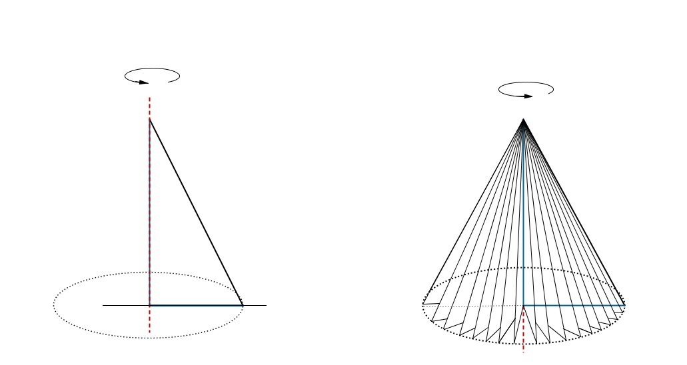
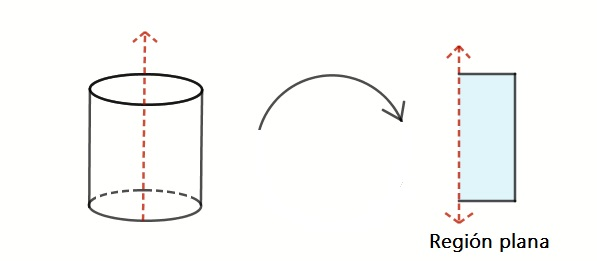

Sólidos de revolución
Sólidos de Revolución
El cálculo de áreas bajo la curva y o de volúmenes, son parte de las diversas aplicaciones a las ciencias que tiene la integral definida.
En esta sección estudiaremos los sólidos de revolución, los cuales desde el punto de vista de las matemáticas, son un objeto del espacio tridimensional que tiene volumen; puede estar rellenos o no y se puede obtener en el espacio al girar una región plana. Observe la figura 7:
¿Cuál es la región plana se hace girar respecto al eje \(y\) en el ejemplo? ¿Qué sólido se obtiene al girar dicha región sobre el eje \(y\)?
Considere ahora un triángulo, tal y como se muestra en la figura 8.

¿Cuál es la región plana se hace girar respecto al eje \(y\) en el ejemplo? ¿Qué sólido se obtiene al girar dicha región sobre el eje \(y\)?
| Definición. Un sólido es una figura geométrica en tres dimensiones: largo, ancho y alto. Los sólidos ocupan un lugar en el espacio y posee volumen (diferente de cero). |
La figura 9, muestra el ejemplo de algunos sólidos.
¿Qué otros ejemplos de sólidos conoces?
| Definición. Un sólido de revolución es aquel que se obtiene de girar una región plana alrededor de una recta, denominada eje de revolución, la cual puede intersecar o no a dicha región. Observe la figura 10. |

En este material se trabajará específicamente dos métodos para poder calcular el volumen de una región del espacio utilizando integración definida, empleando únicamente ejes de revolución horizontales o verticales:
- Los métodos de los discos, se utiliza principalmente para una región obtenida en el caso de que el eje de revolución sea horizontal, y se divide la región en discos.
- El método de las capas o cascarones cilíndricos se emplea principalmente cuando la región posee eje de revolución vertical, y esta se divide en capas.
Obra publicada con Licencia Creative Commons Reconocimiento Compartir igual 4.0